Efficient simulation of topographic lift in Microsoft Flight Simulator (FSX)
Ian Forster-Lewis, University of Cambridge, 26th December 2007
(sim_probe home)
(update 14th January 2008)
Abstract
|
By sampling the ground elevation of the terrain in a windward direction relative to the
current position of the user aircraft, an appropriate value of applicable topographic lift
can be calculated. The technique is highly efficient for flight simulator
use as only the lift at the current location
of the user aircraft needs to be calculated. With a small number of ground elevation sample
points, highly detailed topographic lift can be simulated.
|
Introduction to ridge lift
Topographic lift, known to glider pilots as 'ridge lift', is caused by the simple upward
deflection of the wind as it flows over a locally raised area of ground. Exploiting this
upward component of the wind can keep a
glider or birds aloft for considerable distances.
While any hill can provide lift given a suitable wind, it is the long ridges
perpendicular to the prevailing wind that really provide benefit. The animation below illustrates
the effect of wind blowing against a ridge, with the wind being deflected up and over the ridge and
the strongest lift being concentrated on the upwind side near the top. Note that the lee of the
ridge contains strong sink, and glider pilots (and migrating birds) know to avoid this area.
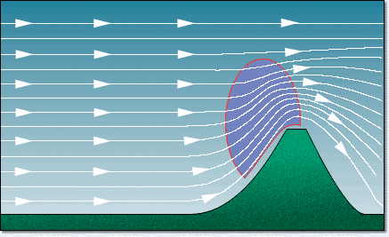
The next illustration shows gliders positioned in the ridge lift. The gliders 'ridge-run' along the
direction of the ridge (with the wind blowing from the left in the diagram) and position themselves
in the strongest part of the lift, upwind of the crest and close to the ground.

This paper describes a technique for the automatic simulation of ridge lift based on the
underlying terrain. This differs from the support provided in FSX missions for the individual placement of
RidgeLift boxes within the mission area, and is considered to render that approach obsolete.
Another article provides an
overview of
lift placement in Flight Simulator missions.
The figure below shows the lift (in metres per second) calculated by the technique described in this
paper. Further sections in the paper explain the computation in detail. (Note: the wind is in the opposite
direction to the illustrations above).

Overview of the technique
The essence of the technique is to:
|
continuously sample the ground elevation upwind
of the user aircraft and calculate slopes, combined with the wind strength and height
of the user aircraft above the ground, to produce a lift factor that can be applied to the user aircraft.
|
The required number of
ground samples is minimised by aligning the sample points into a straight line into the wind.
This paper provides details of an implementation in Visual C++ for Microsoft Flight Simulator X using the simconnect
application program interface.
The calculation of lift discussed in this paper uses the following inputs:
- five samples of the ground elevation
relative the user aircraft,
- the wind speed, and direction,
- the height of the user aircraft above the ground.
The slope to each of the probe points is used to accumulate a lift factor at the user aircraft.
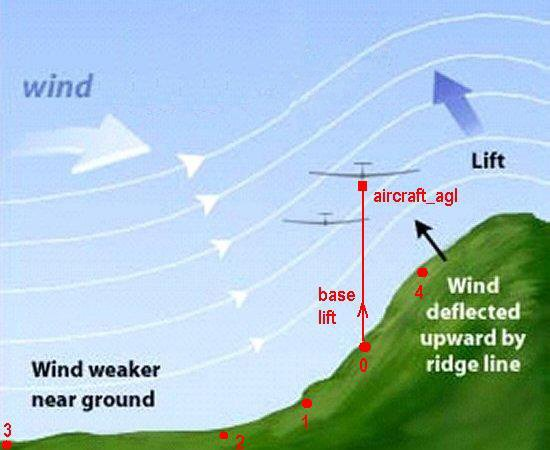
Probe zero: user aircraft (so a separate probe is not needed). Slopes
from each of the other probes to the ground elevation at this point are calculated.
Probe one: local. 500m upwind of the user aircraft. The local slope
(probe zero to probe one)
is used to adjust the lift generated by the main slope, using the difference between
the local slope and the main slope. This increases the lift if the upwind slope is concave,
and reduces it if it is convex.
Probe two: main. 1000m upwind of the user aircraft. The main slope
(probe zero to probe two) is the domininant
determinant of the lift factor for the user aircraft.
Probe three: far upwind. 3000m upwind of the user aircraft.
The far upwind slope (probe zero to probe three)
is used to detect upwind high ground that would diminish the lift on the user aircraft.
Probe four: downwind. 500m downwind of the user aircraft. This probe
has a considerable influence on the lift factor for the aircraft. If the upward or downward
slope continues
'behind' (downwind) the user aircraft then the main lift or sink is enhanced, and but if
the slope downwind does
not continue the direction of the main slope, the lift factor is reduced.
Advantages of the ground sampling technique
Compared to the manual placement of RidgeLift boxes in Microsoft Flight Simulator X:
- the lift placement is automatic. This greatly reduces the workload of creating a
soaring mission using ridge lift and also means any landscape can be populated with lift and
sink on every contour, which a mission developer would be unlikely to provide.
- the lift profile is more detailed. A RidgeLift box provides constant lift for a given
windspeed, while the ground sampling technique can be sensitive to the contours of the
local hillside, and the lift on the aircraft is highly dependent upon the height of the
aircraft above the ground.
- the lift calculation is more efficient. Rather than testing hundreds
or thousands of RidgeLift boxes to
see which should influence the aircraft, the ground is sampled five times. This does depend
on the efficiency with which the ground elevation can be sampled in the flight simulator, but
in Microsoft Flight Simulator X this seems efficient enough.
Compared to the use of pre-compiled 'slope files' as in CCS2004 and CumulusX! version 0.8:
- lift can be more accurately modelled as the local detail of the contours of the ground near
the user aircraft can affect the lift calculation.
- the overhead and complexity of the production and/or installation of a 'slope file' can
be avoided.
Placement of the probes
To sample the ground elevations around the user aircraft, four AI simulated objects are created
and placed around the landscape, numbered '1' through '4' as in the diagram below (the user aircraft is
above position '0'). The pattern
used in this development has been an into-wind straight line but the opportunity remains to try
other patterns although that will likely mean the need for more sampling points and the processing
overhead will need to be carefully assessed.
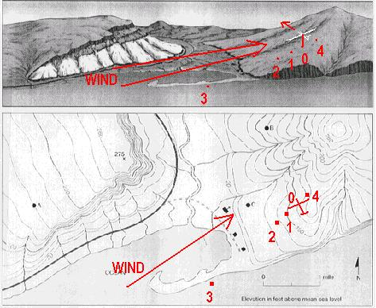
The simconnect API provided with Microsoft Flight Simulator includes the basic facility (amongst
many other capabilities) to:
- query the current environment data for any simulated object including the
user aircraft, e.g. the latitude, longitude, altitude and
ground altitude.
- get the wind direction and speed
- set the latitude and longitude for any simulated object, i.e. move the object to that location
With these capabilities, the ground elevations can be found by
- retrieving the user aircraft latitude, longitude, altitude, ground elevation,
wind speed and wind direction
- calculating the required latitude and longitude of each of the four probes based on
offsetting the current aircraft position using the wind direction
- creating and placing the four AI objects to be used as 'probes' within the simulator
- reading the 'ground elevation' for each of the four probes
The set of ground elevations can then be combined with the wind speed and aircraft agl
altitude to compute a lift value to apply to the aircraft, and the process can be repeated
(say) once per second so that the apparent lift is contantly updated as the user aircraft
moves over the terrain.
This technique has been implemented in Microsoft Flight Simulator, with the default AI
object "Food_pallet" used as the 'probe', as can be seen in the screenshot below
(they are the size and shape of a purple igloo). In this
test there are five probes and their regular placement near the user aircraft was
for test purposes only.
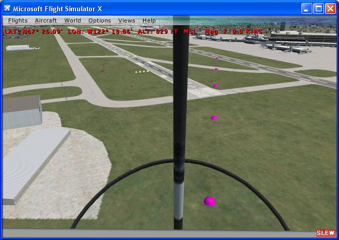
Here is a more detailed overview of the actual simconnect code needed:
- create an AI object for each of your probe points using SimConnect_AICreateSimulatedObject(...).
The 'Food_pallet' in the Misc AI Object
folder works well and is easy to see for testing. The 'Barrel' seems to have become invisible in
SP2 but otherwise works just as well. The initial location of the AI probes doesn't matter.
- Set up an array with bearing and distance from the user aircraft for each of the AI probes -
this is static for the program and defines the 'pattern' of probes relative to the user position.
- REQUEST user aircraft data with SimConnect_RequestDataOnSimObject(...):
latitude, longitude once-per-second (I get ground elevation
for the user aircraft also for an extra data point)
- When request (3) returns, Calculate the lat/long needed for each AI probe using the aircraft
current lat/long and direction with the offsets for each probe from the array in (2).
By calling SimConnect_SetDataOnSimObject(...) for each probe, set
data for the new lat/longs on each of the AI probes and REQUEST the user position again but with
a different request id than (3).
- When request (4) returns, ignore the user data and REQUEST the ground elevation of every probe,
using SimConnect_RequestDataOnSimObject(...) for each probe id,
with a different request id for each request.
- As all the requests from (5) return, keep track of how many probes have returned ground
elevation and when you have them all, PROCESS the complete set of ground elevations (e.g. update your gauge).
With the once-per-second request in (3), the program steps (4)-(6) should run once-per-second.
Important note re step (4): the more obvious step would be to REQUEST the ground elevation
of every probe immediately here, effectively skipping step (5). *But* this does not return
the correct ground elevation, as if the probe is not yet fully moved. The additional 'redundant'
request for the user position gives FSX the processing control back to do the actual probe moves.
Topographic lift calculation formula
The choice of units with simconnect is very flexible, and for consistency throughout this
analysis we shall use metres and seconds where applicable. A useful rule-of-thumb is that
one metre-per-second is very close to two knots. At this point we have:
- Ground elevations aligned into wind at 0m, 500m, 1000m, 3000m and -500m from the user aircraft.
These will be referred to as ground_elevation[0..4] (metres), and distance[0..4] (meters)
respectively. (distance[0] will always be zero, as the zeroeth probe is the user aircraft).
- The current wind speed, which we shall call wind_speed (meters per second)
- The height of the user aircraft above the ground, aircraft_agl (meters).
Slopes
Crucial to the understanding of the technique described in this paper is keeping track of the
various 'slopes' derived from the ground elevation values. Keeping in mind the user aircraft is
effectively 'probe 0', slope[0..2] are calculated between 'probe 0' and probes '1' to '3'
respectively, and slope[4] is calculated between 'probe 0' and 'probe 4',
as in the diagram below:
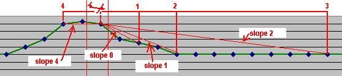
The formula for each slope is simply the difference in ground altitude divided by the distance
between the points, e.g.
slope[0] = (ground_elevation[1] - ground_elevation[0]) / distance[1]
slope[1] = (ground_elevation[2] - ground_elevation[0]) / distance[2]
slope[2] = (ground_elevation[3] - ground_elevation[0]) / distance[3]
slope[4] = (ground_elevation[4] - ground_elevation[0]) / distance[4]
Note that a negative slope using this formula can be expected to provide positive lift.
Remember: The main slope used to determine
the lift on the user aircraft is slope[1].
Using the distances chosen for the development, this is the average slope
of the land to 1000 metres upwind of the user aircraft.
The other slopes are used to adjust the lift for a more detailed result:
| slope[0] |
can be used to account for a convex or concave slope 500m upwind |
| slope[2] |
identifies high ground 3000m upwind of the user aircraft which might reduce lift |
| slope[4] |
confirms whether the slope continues 500m downwind of the user aircraft |
'atan' slopes
Note that the simple calculation of slope will given a value anywhere between
plus and minus infinity. For the purposes of lift calculation the slope number is
adjusted using the formula atan_slope = atan(4*slope)/2. This function
enhances more gentle slopes, attenuates the steepest slopes, and smoothly limits the
values to between plus and minus 0.78 (i.e. pi/4), illustrated in the graph below.
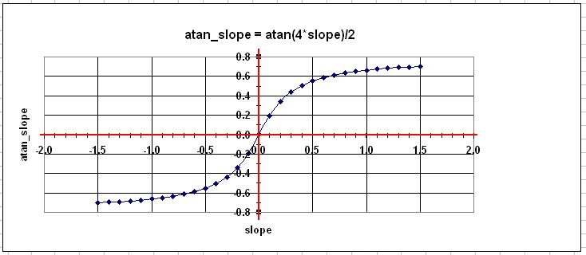
Lift factors
Up to this point we have moved from
- ground elevation, to
- slopes, to
- 'atan' slopes
For each 'atan' slope,
we now need calculate a lift factor. These will sum to the overall lift factor which multiplied by
the wind speed gives us the base lift at the location of the user aircraft. As the contribution due
to each slope is different, a different formula is used for each.
|
Lift factor 1 is simply the negative of atan_slope[1], reflecting the fact that it is
this slope that is used as the primary factor to determine the lift affecting the aircraft.
factor[1] = -atan_slope[1]
|
|
Lift factor 0 is the adjustment due to a convex or concave slope near the aircraft. The formula
is
factor[0] = (atan_slope[1]-atan_slope[0]) * absolute(factor[1])
|
|
Lift factor 2 is the adjustment due to high or low ground 3km upwind of the aircraft
factor[2] = -atan_slope[2] / 1.5
|
|
Lift factor 4 is the adjustment due to rising or falling ground 500m downwind of
the user aircraft
factor[4] = atan_slope[4] / 4
|
Calculation of base lift at a given point
The figure below shows the calculation of base lift with a 10 m/s wind flowing over land with
ground elevations 700, 700, 450, 300, 300 meters at probe points 4,0,1,2,3 respectively, i.e. at
into-wind distances from the user aircraft of -500, 0, 500, 1000 and 3000 metres.
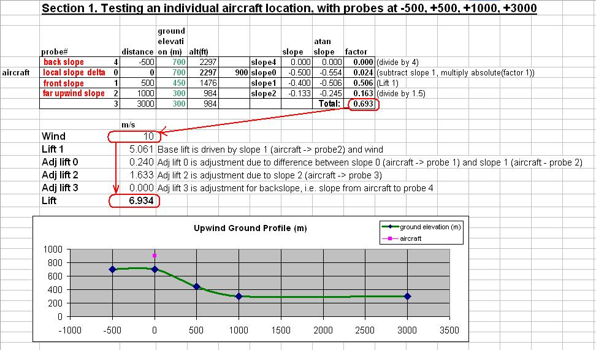
Following the red-circled numbers, it can be seen the lift factors sum to 0.693, which multiplied
by the wind speed of 10, gives a base lift of 6.934 meters per second.
Analysis of lift produced across a given landscape
By creating a much longer test land profile at 250 metre intervals,
and repeating the lift calculation above each point on the landscape, the overall effectiveness of
the technique can be assessed.
In the spreadsheet below, looking within the area circled in red, the base lift at each point on the
ridge has been calculated, ranging from -5.4 metres per second (i.e. sink) in the lee of the ridge, to a
maximum of 6.9 metres per second lift on the upwind crest of the ridge.

The column highlighted with a red outline in the figure below has lift of 6.9 metres per seconds, and is the
'given point' that was analysed in the prior section. Note that the only ground elevation values that are
used in the computation at that point are highlighted in green.
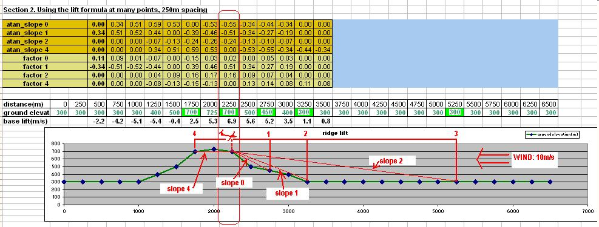
Adjusting the base lift for the aircraft height above ground (AGL)
The calculation so far produces base lift for a given land profile and wind speed, which can
be imagined as the nominal lift at ground level beneath the user aircraft.
An extra (reducing) factor must be applied taking into account the height of the user
aircraft above the ground.
Here, thanks to Peter Lürkens, is the graph of lift versus altitude AGL, for a nominal base lift
of 4.5 meters per second. At 100 meters above the ground, the lift is a healthy 4 meters per second.
However, by about 800 meters AGL the lift will have reduced to 1 meter per second.
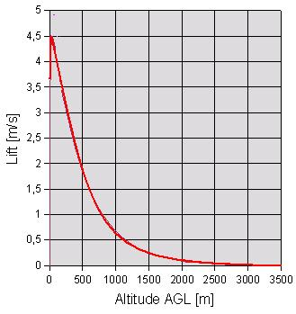
Peter Lürkens, in his CumulusX! development, also uses the ground elevation at the user aircraft,
with the reasoning that the higher the ground, the higher the lift will go above the ground. The lift
affecting the user aircraft becomes a function of the base lift, the altitude of the aircraft agl, and
the ground elevation beneath the aircraft. Again for a nominal base lift of about 4.5 meters per second,
the chart (courtesy Peter Lürkens) showing the lift with altitude AGL at various ground elevations
is given below.

Update 14th January 2008
The principles described in the preceding paper have proved effective during testing within
Microsoft FSX, and more accurate values for the weight values and formulae have been evolved.
The parameters available for adjustment include:
- The distances of the probes.
- The choice of which pairs of probes to use to derive slopes.
- The formula to use to normalize each slope.
- The weights to apply to each slope in deriving base lift
- The formula to use in adjusting base lift to account for the user aircraft height above ground.
1. Distances of the probes
The current version uses the following probe distances: 0m, 250m, 750m, 2000m, -100m. It may
be noted these are all reduced from the initial estimate as it was found the sorter distances give
greater sensitivity to local ground features without being overly vulnerable to erroneous local
distortions.
2. Pairs of probes to use in calculating slopes
The initial work assumed each slope would be taken with reference to probe 0 i.e. in each
case one point would be the ground elevation beneath the user aircraft. With testing it was found
more effective to calculate each slope with reference to the adjacent probes. At the same time,
for ease of use,the polarity of the slopes was adjusted to consistently make a positive
slope indicate a positive potential lift contribution. Also the slopes are consistently named
slope[0..3] rather than naming the downwind slope slope[4].
Noting that the distance to
probe 4 (the downwind probe) is negative):
| slope[0] = (ground_elevation[0] - ground_elevation[1]) / distance[1] |
| slope[1] = (ground_elevation[1] - ground_elevation[2]) / distance[2] |
| slope[2] = (ground_elevation[2] - ground_elevation[3]) / distance[3] |
| slope[3] = (ground_elevation[4] - ground_elevation[0]) / -distance[4] |
with distance[0..4] being 0m, 250m, 750m, 2000m, -100m as discussed earlier.
3. Slope adjustment (normalization) formula
The formula
sin(atan(5 * (abs(slope) ^ 1.7)))*sign(slope)
was found to give good
results. This function versus slope angle in degrees is illustrated in the chart below
with a Sine curve for comparison.
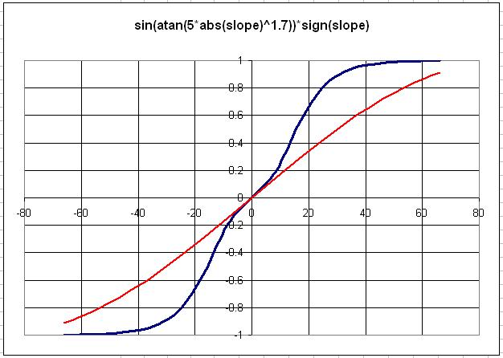
4. Weights to apply to each adjusted slope
The results of testing within FSX produced the following suitable weights to apply to
each adjusted slope:
| slope[0] | 0.2 |
| slope[1] | 0.2 |
| slope[2] | if (slope[2] is negative) 0.5 else 0.0 |
| slope[3] | if (slope[0] is positive AND slope[3] is negative) 0.0 else 0.2 |
5. The height adjustment formula
A function was created which divided the user altitude above the ground (AGL) into three
regions.
- 0..BOUNDARY1. The area of lift reduction due to friction and turbulence caused by
the ground. The lift adjustment factor increases linearly from 0.5 to 1.
- BOUNDARY1..BOUNDARY2. The range for which the lift is at its maximum, i.e. the lift
adjustment factor is 1.
- above BOUNDARY2. The lift decreases exponentially with height, and the lift adjustment
factor ranges from 1 tending down to 0.
As a result of testing, the heights chosen for BOUNDARY1 and BOUNDARY2 were
| BOUNDARY1 | 40 meters |
| BOUNDARY2 | 130 meters |
In addition, work done by Peter Lurkens with his CumulusX! development highlighted the benefit of
decreasing the exponential decay of lift as the ground elevation at the user aircraft increased.
This approximation means the lift will rise high above ridges with high peaks, but not as high above
lower ridges. In general this is expected to be a good compromise with generally appropriate behaviour
except where a high plateau contains a small ridge.
If we were not seeking to normalize the lift adjustment factor to 1 at BOUNDARY2
and ignored the adjustment for altitude, the simple exponential formula would be
agl_factor = exp(-2 * user_agl / user_ground_elevation)
taking into account the requirement to give the factor 1 at user_agl=BOUNDARY2, and
providing a linear adjustment to the exponential factor according to ground elevation, we
end up with
agl_factor = exp(-(2 + 2 * user_ground_elevation / 4000) * (user_agl - BOUNDARY2)
/ max(user_ground_elevation,200))
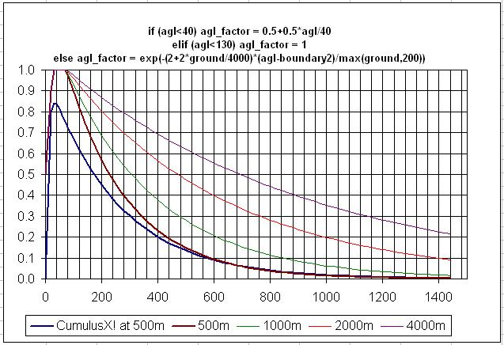
Visualization of the simulated ridge lift
The following graphic illustrates the contours of lift generated by the technique (still subject to
'tuning' of the parameters):

Please note the vertical scale is greatly exaggerated. This helps the visualization and
it might be noted that the user perception within the simulator
(and flying along the real ridges) is that they are steeper than they really are. The following
small image shows the vertical and horizontal distances at the same scale:
Appendix
The spreadsheet used to test the base lift calculations is available
here.
The compiled simconnect program which creates five AI probes and continuously displays
their ground elevation is
here.
The Visual C++ simconnect source file for this executable is
here.